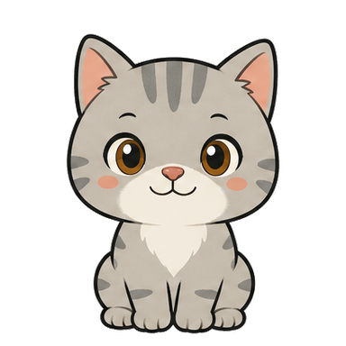

久坐满 1 小时，猫缩成约 81px 的毛球，只沿 X 轴慢慢滚到中央叩屏三次，再滚回原位。
1 HOUR锁屏立即算离开；托腮或短暂丢脸 30 秒内回来继续累计，摄像头无帧也不会冻住久坐。
RESUME 30s双正脸分类器交叉确认，左右侧脸继续识别，并过滤镜像对称假目标，降低柜子纹理误判。
FACE × 2识别到杯子或瓶子，猫也陪你喝。一口 50 / 一大口 100 / 半杯 150 / 一杯 300ml，误判可直接关闭。
CV + YOLO每天 2000ml；提醒默认 30 分钟，可调 20–90 分钟，并从最近喝水或提醒重新计时。
20–90 MIN默认闭眼、省 CPU 抽帧；点眼睛才显示画面。识别不联网、不上传、不保存视频。摄像头没信号时会明说并让出设备。
LOCAL ONLY饮水趋势、坐时长、久坐超限和 7 天对比都由本地 CSV 生成，报告无需联网。
LOCAL SVG悬停看详情、点眼睛看预览、拖动位置；右键或托盘可暂停、关闭中央提醒、开机自启和重看教程。
TRAY + MENU默认关闭，只有你从右键或托盘手动开始才录。每 60 秒抓一帧，停止时在本地合成 MP4 存进 logs/timelapse/；锁屏、离座、遮挡和暂停检测时不抓帧。
60s / FRAME · MP4右键或托盘一键换猫的样子，内置银灰经典与暖橘元气两套，日常八个状态整套跟随。选择写进本地 settings.json，下次启动还是它。
CLASSIC / ORANGE下载 DingDingMeow-windows.zip，解压到任意目录（不需要装 Python）。
双击 盯盯喵.vbs，小猫直接出现在桌角，全程无黑窗，托盘也会亮。
右键小猫或点托盘：关闭中央提醒 / 调喝水间隔 / 看报告 / 暂停 / 开机自启。